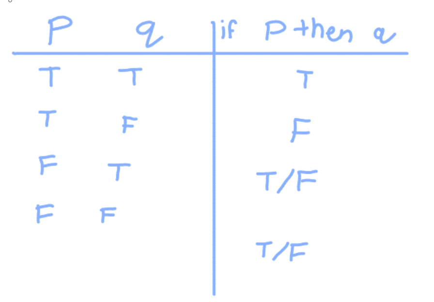
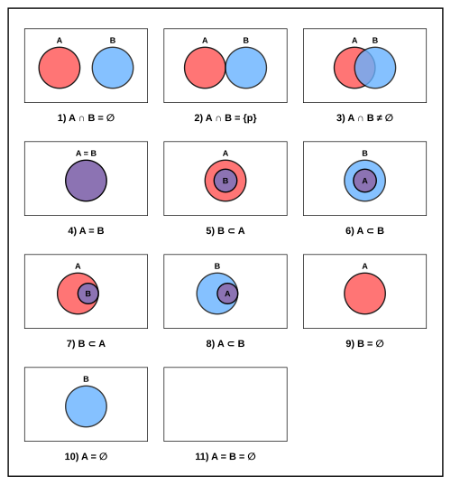

Logic
25 Problems • 5 sub-topics
Adalynn Le • 5/9/2026
Table of Contents
Introduction
The whole point of the AMC 10 is elevated and applied math that requires you to know more than just formulas and also understand how to use them with logic, the foundation of all mathematics
Statements
In mathematics, every statement has to be inherently clear because math is a game of quantitiative data and strict values so even qualitiative data must be kept strict. Thus, all claims, ideas, or formally statements, are sorted into four buckets.
Each statement, written as \(\textup{if } p \textup{ then } q\) consists of two parts. The hypothesis includes the word "if" and the conditional \(p\). The conclusion contains "then" and what happens as a result \(q\). A full statement with a hypothesis and a conclusion is known as a conditional statement.
Inverse
You can "negate" a statement by changing the truth value of it. For example, to negate the conclusion means to say that \(q\) will not happen. When you negate both the hypothesis and the inverse, the new statement is called an inverse and can be written as \(\textup{if ~} p \textup{ then ~} q\). just because a conditional statement is true does not ensure the inverse is true
Converse
If you switch \(p\) and \(q\), you end up with something known as the converse. This would be written as \(\textup{if }q\textup{ then }p\)
Contrapositive
When you find the the inverse of the converse or visa versa, you get the contrapositive. A contrapositive is written as \(\textup{if ~}q\textup{ then ~}p\)
Biconditional
A biconditional statement is written as \(q \textup{ if and only if } p\). The biconditional is only true when both the statement and its converse are true
Inverse
Converse
Contrapositive
Biconditional
If you are studying for the AMC 10, then you should use Saintly!
Statements, combined with the following tables and conditions you're goin to learn about are the basis for all logic. This vocabulary may also come up on the test, so be sure to study it.
Logic Tables and Conditions
Logic is based on the influence events have on each other and understanding the relationships between them. The influence is described by statements, and the relationship is defined by conditions. The main conditions are and, or, not. These are all pretty self explanatory. And dictates when both must be true, or dictates at least one, and not is negation like we see in inverses. Although seemingly basic, it is important to keep these in mind especially because you may need to follow complex thought pathways and processes involving these ideas. Fun fact, you can actually relate and and or with not and nor, according to the work of mathematician De Morgan. He realized that the negation of \\(p \textup{ and } q\) is \(\textup{~}p \textup{ or } \textup{~}q\) and visa versa.
Truth tables are what they sound like: organized tables detailing the boolean outcome for a speicfic input. These are particularly helpful when there rae multiple inputs that affect a single True or False output. You would use conditional relationships to model how one affects the other in this situation. This is one method of casework that can help you keep your work clean and organized

Set Theory

Image Source: Wikepedia
Sets are what they sound like: Collections, or sets, of numbers. Sets can be divided into subsets that include one or more elements of the set. Power sets are sets that include every possible subset in the set. An element \(x\) in a set \(y\) is mathematically written as \(x \in y\)
Between two sets you can perform operations. Consider we have two sets \(A\) and \(B\) A union involves every value in both sets, altogether, written as \(A \cap B\). An intersection involves all the values in BOTH sets, written as \(A \cap B\). Finally the difference of sets, similar to subtraction, includes all values in \(A\) but not \(B\)
Generally speaking, Set Theory is divided into two parts, naive set theory, and aximoatic set theory. The prior is more reliant on intuiotion, but that does not mean it is not complex. Think about long-winded AMC 10 problems where you get one fact and see what everything else means based on that. Naive set theory is exactly like that, it relies on intuition and well as something called Cardinality. Cardinality, as defined by mathematician Georg Cantor, is a way of comparing the size of two sets can be compared by finidng a 1:1 ratio and seeing what is left. Cantor also proposed that the set of all real numbers is an infinitely large set, and created the idea of powersets that must always be larger than the original set. The issue with naive set theory was that the lack of laws in comparrison to general mathematics led to paradoxes. Paradoxes in set theory are occurences where the set contradicts itself, and they are the aim of eliminating them is the foundation of advanced set theory. The laws that were created to restrict paradoxes are called axioms, and they forge the base of Axiomatic Set Theory
Set theory is inherently theoretical, and it is typically used alongside graphs and threedimensional shapes as a set that includes things like range and domain bounded by axioms. A collection of any group of numbers is called a set, and thus axioms and sets are everywhere. On the AMC 10 specifically, sets commonly arise when you need to find overlaps, the length and size, etc. These are more simple and typically involve more algebra and pure logical intuition than axioms, but it is still important to know and familiarize yourself with the vocabulary and symbols
Disciplines
Logic takes a different form in different subjects and topics of the AMC 10. It is important to recognize when and how to use it best
Algebra
The biggest place this comes up is hand in hand with algebraic manipulation and modeling word problems. Logic goes hand in hand with interpreting and solving equations, especially applying well known tricks to a novel equation
Geometry
Geometric reasoning and logic is honestly one of the most interesting facets of math. I find it is most important for visualizing items, especially because the AMC 10 doesn't always give you diagrams to interpret.
Number Theory
Number theory is where logic shines, as the two are closely entertwined. I find logic tends to present itself whenever you are doing things with polarity, factorization, etc. essentially anything relating to the underlying traits and characteristics of numbers and how they interact
Probability
Like number theory, probability and logic are inherently intertinwed. One of the biggest ways you'll find logic in probability is in combinatorics and counting-particularly complementary counting and when to use it. A lot of probability logic is knowing how to optimize your solution and find the best way to doit, whether that be with complementary counting or with casework.
Conclusion
Logic is equal parts the most essential and the most intuitive element of the AMC 10. Every question will have logic embedded in it, so it is important to understand if anyhing just the structure and idea of it. Though advanced theory may help you to know, understandin the concept and thoguht processes behind logic in general is far more important. A basic grasp of logic can help you grow your other skills and thus make you a better mathematician in general. .
Question 1:
Loading question...